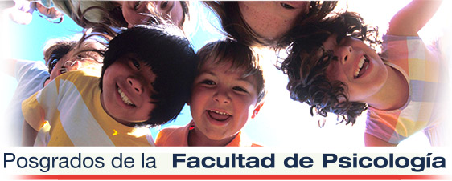
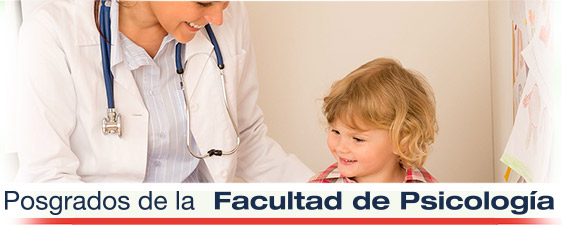
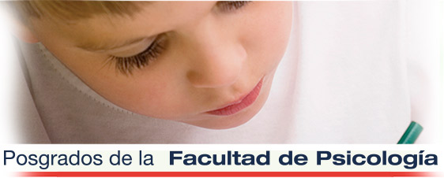

Inicio
La Facultad de Psicología de la Universidad CES ofrece a los profesionales de Ciencias de la Salud, Ciencias Sociales, Humanidades y Educación programas d e Posgrado novedosos, con propuestas diferenciadoras y pertinentes en los contextos actuales. Nuestro compromiso con los procesos de transformación social y el cuidado de la salud mental, se reflejan en programas de posgrado de alta calidad académica, un excelente acompañamiento y con los mejores recursos locativos y docentes. Nuestros egresados y estudiantes se caracterizan por su diversidad en la formación de pregrado, su lugar de procedencia, su desempeño en sectores públicos y privados El estudiante de posgrado de la Facultad de psicología del CES tiene la opción de formarse con altos estándares que se sustentan en fortalezas en la formación teórica, ética y científica. La posibilidad de contacto con el entorno local, nacional e internacional complementa de manera importante esta formación. Por eso no dudes en consultarnos, estos posgrados están al alcance de todos. Pregunta por nuestros planes de financiación con diferentes entidades.
Maestría en Salud mental de la niñez y la adolescencia Medellín y Pasto
Título otorgado
Magíster en Salud Mental de la Niñez y la Adolescencia
Duración 2 años (4 semestres)
Código SNIES Medellín: 90987
Código SNIES: 102793 Pasto (Convenio con Universidad Mariana de Pasto)
Forma investigadores en el nivel de maestría capaces de generar conocimiento sobre la Salud Mental de poblaciones de niños, niñas y adolescentes, que permitan establecer planes, programas, proyectos y estrategias de abordaje que favorecen su desarrollo integral y el de la sociedad.
Especialización en Salud Mental del Niño y el Adolescente
Título otorgado
Especialista en Salud Mental del Niño y el Adolescente
Duración 3 semestres
Código SNIES: 8174
El programa busca la formación de especialistas con las más altas cualidades humanas, éticas y científicas para abordar contextualmente la Salud Mental de niños y adolescentes, fundamentarlas teóricamente y, a partir de allí, crear estrategias de intervención pertinentes y oportunas a partir de la generación de planes, programas y proyectos.
Especialización en Valoración del Daño en la Salud Mental
Título otorgado
Especialista en Valoración del Daño en la Salud Mental
Duración 3 semestres
Código SNIES: 13674
El especialista en Valoración de Daño en la Salud Mental, Psicólogo o Psiquiatra, tendrá fundamentos y conocimientos de las bases legales y de la salud mental, para rendir un dictamen pericial con los requisitos científicos y técnicos de la prueba pericial en las diferentes áreas del derecho
Especialización en Rehabilitación Neuropsicológica
Título otorgado
Especialista en Rehabilitación Neuropsicológica
Duración 3 semestres
Código SNIES: 54519
Forma especialistas con las más altas cualidades humanas, éticas y científicas para rehabilitar pacientes con trastornos en sus procesos cognitivos básicos, tanto en el ámbito regional como nacional
Especialización en Neurodesarrollo y Aprendizaje

Título otorgado
Especialista en Neurodesarrollo y Aprendizaje
Código SNIES: 102226
Forma especialistas que articulan elementos de la neuropsicología, la psicología del desarrollo y la psicología del aprendizaje en la construcción, direccionamiento y ejecución de programas dirigidos a promover el desarrollo de niños y niñas.